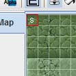
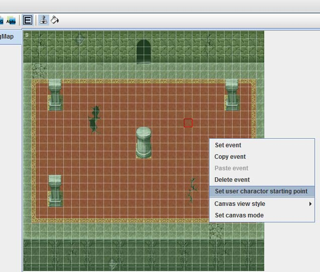
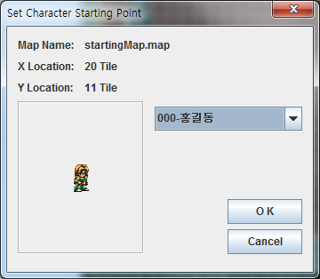
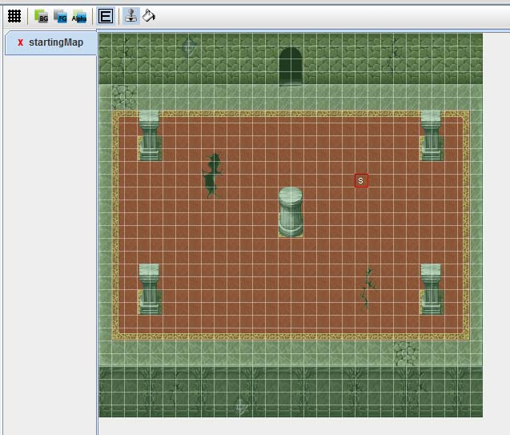

Step 4. 이벤트 작성
맵과 캐릭터를 생성했습니다.
이번에는 이벤트를 삽입하여 봅시다.
이벤트를 설정 하기 위해서는 이벤트 모드로 설정해야합니다.
캔버스 위의 이벤트모드 버튼()을 누릅니다.
이벤트 모드가 되면 화면이 약간 초록 빛으로 변하는 것을 확인 할수 있습니다.
- 이벤트 모드
1. 캐릭터의 초기 위치 설정
새로운 게임을 시작하면 처음에 유저의 캐릭터가 어디서 시작하는 지를 설정해야합니다.
즉, 모든 맵을 통틀어서 단 1곳에만 설정을 해주면 됩니다.

이벤트모드를 들어가면 X :0 , Y : 0 위치에 S 라고 써있는 것을 확인 할 수 있습니다.
기본적으로 처음 생성된 맵의 (0,0) 위치에 자동으로 설정이 되기 때문입니다.
이것을 화면 중앙으로 바꿔 주도록 합시다.

화면 중앙을 클릭하여 캐릭터가 시작한 위치를 잡고 마우스 오른쪽 클릭합니다.
팝업 메뉴의 Set user character starting point 를 선택합니다.

위치를 선택하면 그 위치에서 시작할 캐릭터를 선택하는 창을 볼수 있습니다.
지금은 홍길동 캐릭터가 하나 밖에 없으므로 OK 하여 홍길동 캐릭터를 위치 시킵니다.

S 의 위치가 바뀐것을 알 수 있습니다. 이제 게임이 처음 시작하면 캐릭터는 저 S 의 위치에서
시작하게 되었습니다.
2. 몬스터와 NPC의 배치
|